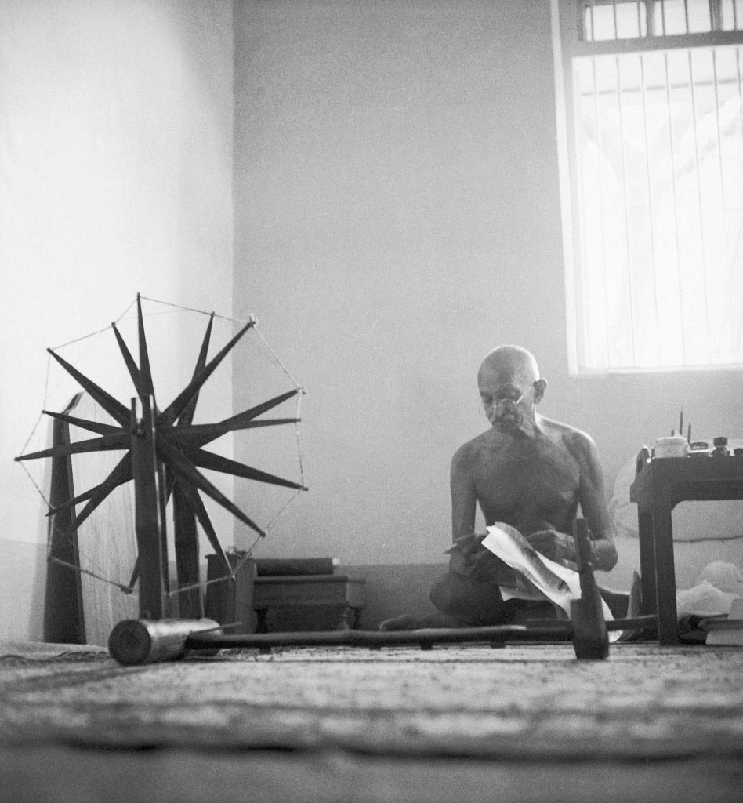
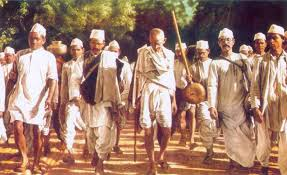

Introduction
Mahatma Gandhi, also known as Bapu, was a prominent leader in India's struggle for independence against British rule. He is remembered for his non-violent civil disobedience and his principles of truth and non-violence (Satyagraha).
Achievements
Gandhi's accomplishments are numerous and have left a lasting impact on the world:
- Leading the successful Salt March, a significant civil disobedience campaign against British salt taxes
- Advocating for the rights of the untouchables (Dalits) and fighting against caste discrimination
- Promoting Swadeshi movement to encourage the use of locally-made products and boycott of British goods
- Championing the cause of Indian farmers and laborers
Inspiration
Mahatma Gandhi's teachings and philosophy of peace, harmony, and non-violence continue to inspire millions of people worldwide. His dedication to truth, simplicity, and self-reliance has left a profound impact on the hearts of many.
Gallery

Mahatma Gandhi at the spinning wheel

Mahatma Gandhi leading a peaceful protest